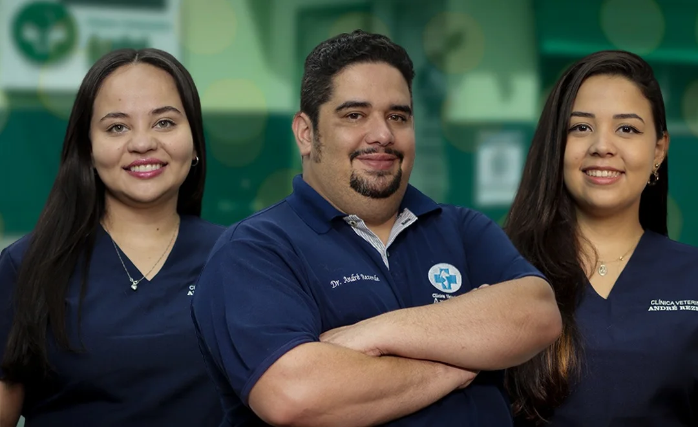
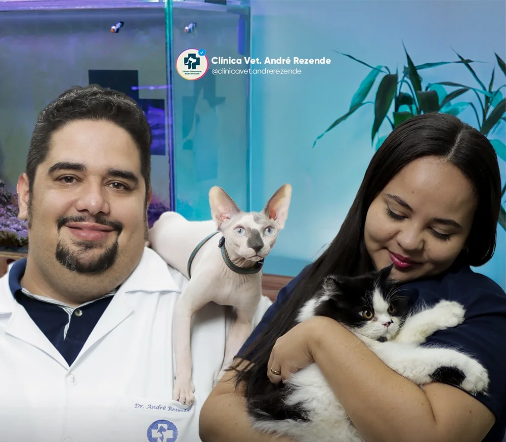
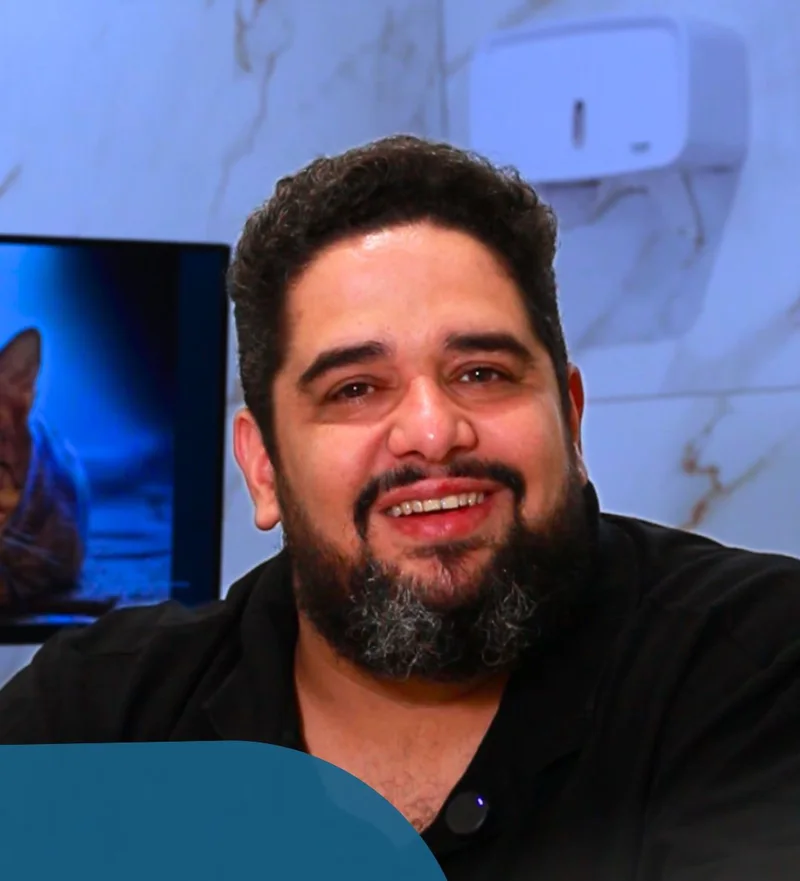
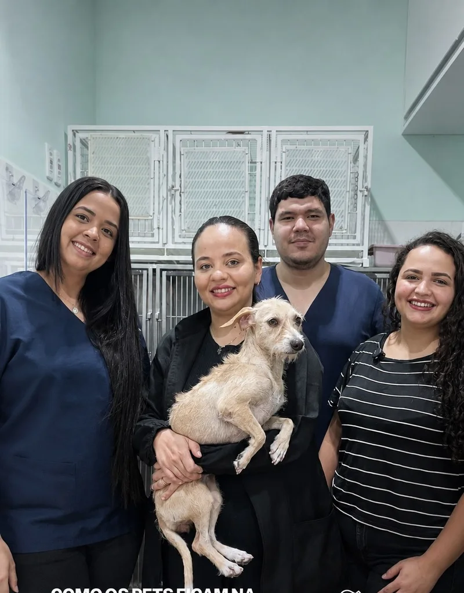
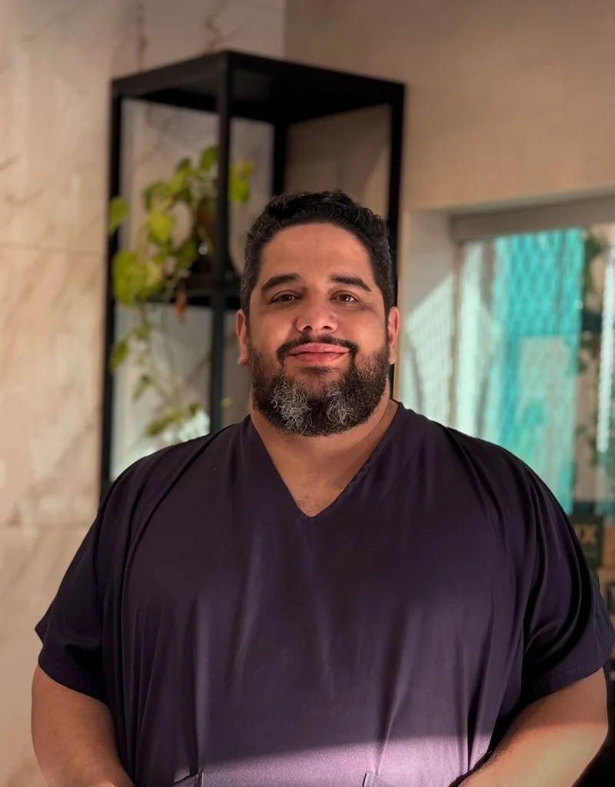
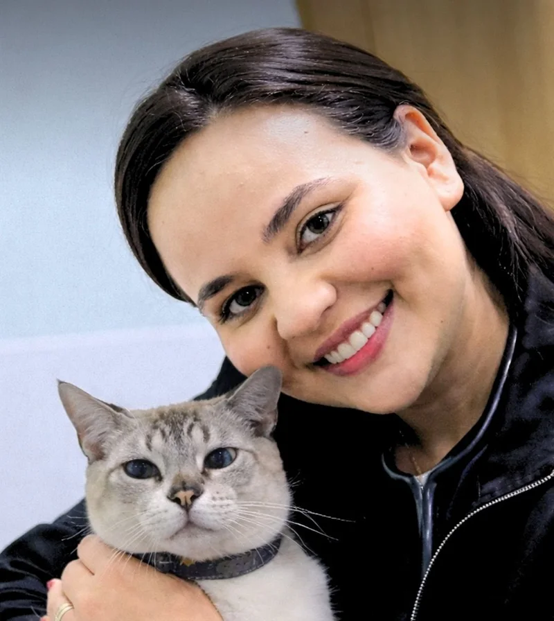
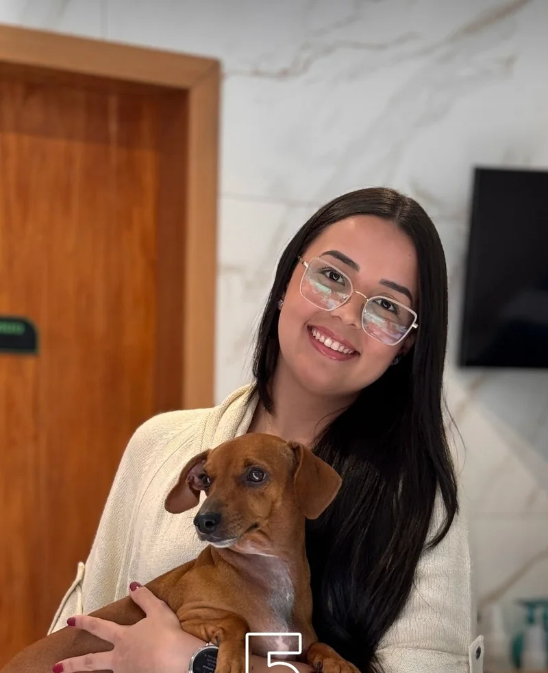
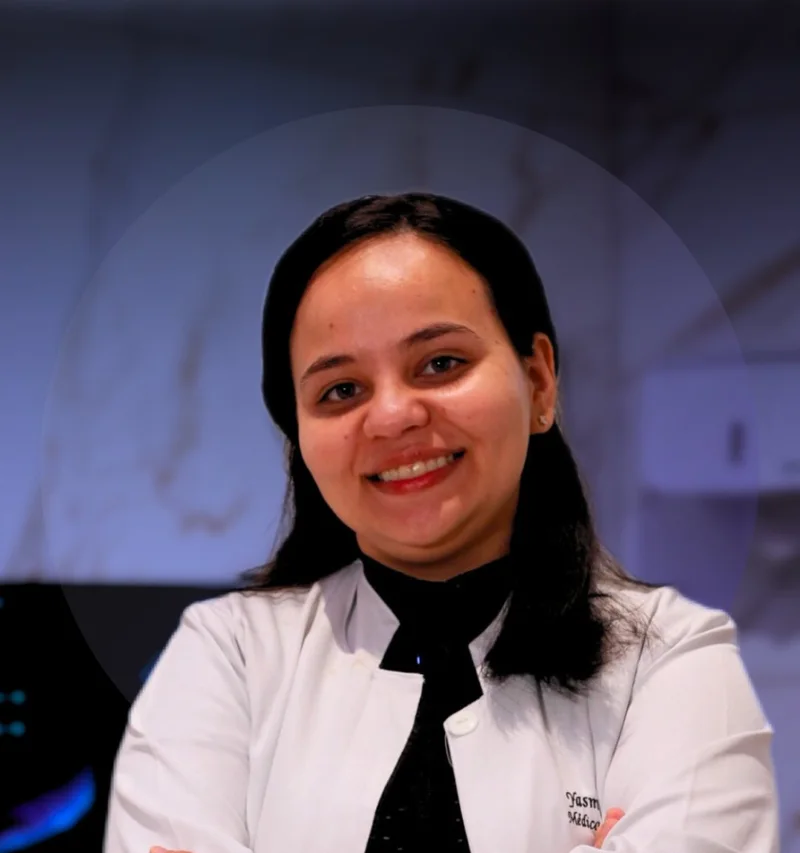

Plantão 24 horas
Emergências a qualquer hora do dia ou da noite, todos os dias.
Emergência agoraAberto agora·24 horas·Cuiabá
Internação, cirurgia, castração, vacinas, consultas e exames em um só lugar, com uma equipe que trata o seu pet como parte da família.
4,9no Google · 217 avaliações

Serviços
Do check-up à cirurgia, escolha o serviço e fale direto com a clínica pelo WhatsApp.
Emergências a qualquer hora do dia ou da noite, todos os dias.
Emergência agoraClínica geral, consulta de rotina, pediátrica e check-up completo do seu pet.
Agendar consultaCirurgia geral, abdominal, ortopédica e de mama, com anestesia e monitoramento.
Falar sobre cirurgiaInternação para cães e gatos, com acompanhamento de perto da equipe.
Saber sobre internaçãoVacinação de cães e gatos, para proteger o seu pet das doenças mais graves.
Vacinar meu petCastração de cães e gatos, inclusive técnica minimamente invasiva, com exame pré-operatório.
Saber sobre castraçãoRadiografia digital e ultrassonografia, para diagnósticos mais rápidos.
Pedir exame de imagemExames de sangue, urina e fezes, para um diagnóstico seguro.
Pedir examesEspecialidades
Além da clínica geral, a equipe atende áreas que exigem mais preparo, para o seu pet ter diagnóstico e tratamento no mesmo lugar.


Na TV Mato Grosso
No quadro "Dicas do Mundo Pet", do programa Crispim Neto, na TV Mato Grosso, o Dr. André Rezende traz toda semana um tema de saúde e cuidado com os pets: leishmaniose, adoção, queimadas e muito mais. Informação séria, dita de um jeito simples.
Ver os vídeos no InstagramEquipe
Médicos-veterinários e uma equipe preparada para atender em qualquer hora, com carinho e técnica.




Vídeos
Vídeos curtos da equipe sobre vacinas, castração, doenças e cuidados no dia a dia. Assista no Instagram da clínica.
Como chegar